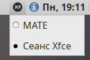
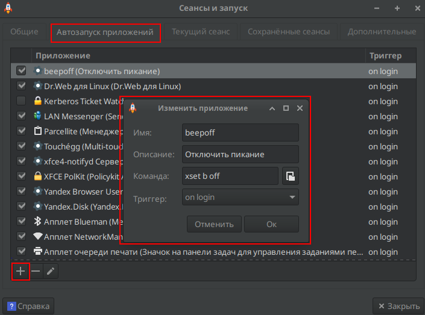

Альт Линукс: Основные настройки
Безумие Морского Котика 🐱
Введение
Документация по автоматизации развертывания и обслуживания Альт Линукс СП Рабочая станция. Все команды протестированы на стабильной ветке c10f2.
Система ALT SP Workstation 11100-01 на дату 22.04.2026 имеет версию ядра:
6.12.74-6.12-alt0.c10f.2
Дистрибутивы
Все необходимые .iso, .rpm и архивы собраны в отдельных директориях: dist и iso на Яндекс Диске.
📁 Перейти на Яндекс Диск для скачивания dist 📁 Перейти на Яндекс Диск для скачивания isoУстановка Альт СП 10 Рабочая станция
Установка
Выберите: Установить ALT SP Workstation

Выберите профиль: Вручную

Удалите старые разделы

Создание раздела для микропрограммы UEFI
При установке в режиме UEFI обязательно создайте раздел EFI размером 512 МБ, файловая система FAT32, точка монтирования /boot/efi. В противном случае система не загрузится. Если используется режим Legacy(BIOS), то создавать EFI-раздел не нужно. Чтобы понять какая микропрограмма стоит достаточно раскрыть список "Тип раздела" при создании раздела, если в списке есть "efi system partition", значит UEFI, если только "FAT32", значит Legacy(BIOS).
1. Создание раздела efi


2. Создание раздела swap
Обязательно создайте раздел для Swap (подкачка) хотя бы 8Гб. В некоторых ситуациях отсутствие swap может привести к "тормозам", даже если ОЗУ свободно.


3. Создание основного раздела /


Создание разделов для микропрограммы Legacy(BIOS)
1. Создание раздела swap
Обязательно создайте раздел для Swap (подкачка) хотя бы 8Гб. В некоторых ситуациях отсутствие swap может привести к "тормозам", даже если ОЗУ свободно.


2. Создание основного раздела /


Далее. Загрузитесь с жесткого диска.
После загрузки с жесткого диска.
Снять галочку "Установить или сбросить пароль"

Настройте сеть

Задайте пароль root

Создайте учетную запись пользователя


После установки
Удалить атрибут noexec в /etc/fstab с /tmp и /home
Если раздел /home отдельно не создавался при разметке диска, то его и не будет в fstab
В редакторе vim для входа в режим ввода нажмите: a или i или o
a - ввод после курсора; i - ввод до курсора; o - ввод с новой строки
Для сохранения и выхода войдите в режим команды нажав Esc затем наберите: :wq
Затем нажмите Enter
Для СП фиксация для исключения деградации
Управление пользователями
Обновление Альт СП релиз 10 до версии 10.2
Автоматическое обновление
Для простоты обновления был написан bash скрипт update-kernel_10.2.sh. Данный скрипт выполняет все действия, которые описаны в нижестоящих главах, а именно: переход на ветку c10f2, обновление ядра и проверка с фиксацией. Путь до скрипта: distr/update_kernel/update_kernel_10.2.sh
Если скрипт выполнился успешно, то никаких других действий по переходу выполнять не надо.
Актуализация текущей пакетной базы
Закомментировать диск с установщиком Альта в fstab, иначе без установочного диска будет ошибка при обновлении дистрибутивов
Закомментировать диск с установщиком Альта в source.list
Раскомментировать репозитории. Раскомментировать/добавить три строчки. Если почему-то репозитории по http подвисают, то использовать по ftp
Выполните обновление системы
Если файловая система защищена от изменений механизмом IMA/EVM, отключите его. Для этого запустите от имени root команду integrity-remover, после чего система будет перезагружена.
Обновление до версии 10.2
Переключите бранч на 10.2
Снова внесите изменения в файл /etc/apt/sources.list.d/altsp.list и другие источники APT. Добавить c10f2
Чтобы проверить, используется ли integalert используйте команду: systemctl is-enabled integalert
При наличии каталога /etc/osec, переместите куда-нибудь файлы настройки старого сканера проверки целостности на основе OSEC (используется утилитой integalert)
Обновите индексы для нового источника и систему, затем обновите ядро и перезагрузитесь. Убедиться, что ядро обновилось выполнив uname -r до update-kernel и после reboot
Если в процессе выполнения первых трёх команд возникнут сообщения про несовпадение размера пакета или контрольных сумм, повторите команды, начиная с apt-get update.
update-kernel ищет обновление только к конкретной версии ядра. Если вышла другая серия, к примеру, стоит un-def, а вышла std-def (просто kernel-image), то в update-kernel надо указывать конкретное ядро.
Проверить можно командой: update-kernel -l
Должно быть: * (36 d) kernel-image-6.12-6.12.74-alt0.c10f.2 [default]
Следующий пункт выполнять только если ядро не обновилось из-за разных серий (un-def, std-def – просто kernel-image)
После перезагрузки
Зафиксируйте новое состояние системы для корректной работы сканера проверки целостности на основе OSEC, если он использовался ранее и при перезагрузке компьютера выводилось сообщение о возможном нарушении целостности
Внимание! Если перед обновлением файловая система была защищена от изменений механизмом IMA/EVM, включите его обратно при помощи утилиты integrity-applier
После обновления ядра перестает работать virtualbox, т.к. под каждое ядро надо пересобирать ядро для виртуальных машин. Проще переустановить виртуальную машину
Установка темы "Windows"
Установка самой темы. Пакет необходимо установить до создания пользователя, затем создать пользователя.
Если требуется установить тему под текущим пользователем, то необходимо после установки пакета перегрузить компьютер, выполнить от пользователя:
Окружение Xfce4
После обновления до с10f2 обновляется окружение MATE до 1.26.1, у которой наблюдаются проблемы с дочерними окнами, они открываются за главным окном. _NET_ACTIVE_WINDOW message with a timestamp of 0 Приложение пытается активировать своё окно через стандартный X11-протокол, но не передаёт корректный таймстамп (временную метку последнего пользовательского события — клика, нажатия клавиши). По стандарту EWMH таймстамп не может быть 0.
meta_window_activate called by a pager with a 0 timestamp Marco (как и его «родитель» Mutter из GNOME) игнорирует такие запросы — это защита от «фокус-хищений» (когда вредоносное приложение могло бы принудительно перехватывать фокус ввода). Из-за игнорирования запроса активации всплывающее окно (диалог загрузки, файловый менеджер) не поднимается поверх родительского окна — остаётся в фоне.
Решение: перейти на другое окружение, например Xfce4.
Установка окружения Xfce4
Выберите сессию Xfce при входе: на экране входа в систему (где вы вводите пароль) найдите значок шестеренки или меню сессий (обычно в углу экрана), нажмите на него и выберите «Сеанс Xfce».

Отключить звуковой сигнал встроенного динамика. Работает до перезагрузки. Чтобы работало постоянно, надо добавить в автозапуск (Сеансы и запуск) команду xset b off.

Список билетов Kerberos
Сообщение об ошибке связано с Kerberos — системой сетевой аутентификации, которая часто используется при подключении компьютера к домену Active Directory (AD).
Управление репозиториями
Удаление репозитория
Установка репозитория
Права
Форма записи
chmod ugo
chmod цифры
| Символы | rwx | rw- | r-x | r-- | -wx | -w- | --x | --- |
|---|---|---|---|---|---|---|---|---|
| Цифры | 7 | 6 | 5 | 4 | 3 | 2 | 1 | 0 |
Дать права на директорию без вложений
Дать права директории и вложениям
Изменение владельца
Система инициализации
Службы = Юнит
systemd
Юниты хранятся:
Заново прочитать все конфигурации юнитов
Примерное описание конфигурации unit
Создание собственного юнита
systemv
Создание демона
Создать файл сервис systemd
Активировать и запустить сервис
Управление и логи
rpm - управление пакетами
Основные команды.
apt-get – управление пакетами
wine
Установка
Vim
Vim: рабочие режимы, хоткейсы и команды